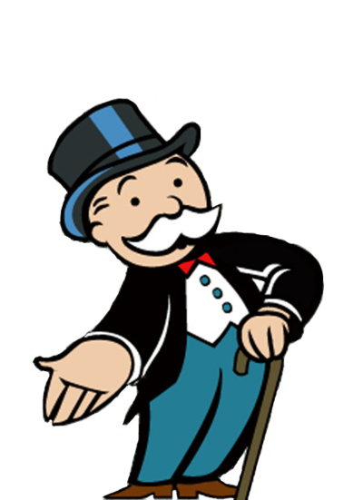

Lo que paso en realidad es que por el año 1924 un amigo de Charles Darrow le presto una copia del juego de Lizzie, y decidió hacer una copia casera antes de devolver el original. Pero hizo algunas modificaciones a las reglas y al tablero.
Las reglas en contra del monopolio, eran las que estaban más ligadas a las ideas que tenía el economista Henry. Pero esas reglas no fueron muy aceptadas por los jugadores, porque la diversión estaba en poder competir con tus conocidos y ver quien se quedaba con todo.